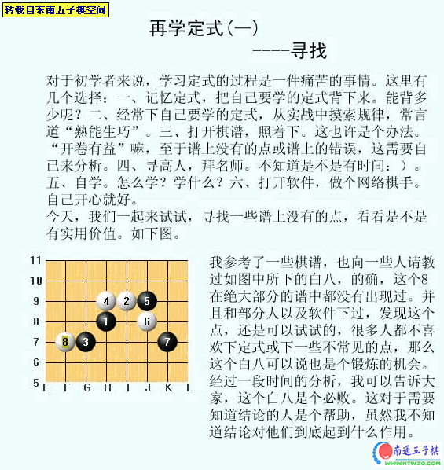
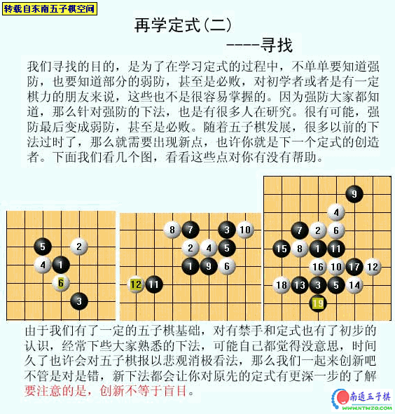
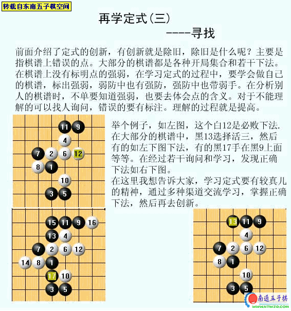

再学定式[东南五子棋讲座]
首页
定式及研究
#1 再学定式[东南五子棋讲座] 作者：有志青年 发表时间：2006-12-1 11:59:14



#2 Re:再学定式[东南五子棋讲座] 作者：cfs085 发表时间：2006-12-14 12:54:22
顶
#3 Re:再学定式[东南五子棋讲座] 作者：tk277 发表时间：2007-1-25 2:08:10
子落月影
#4 Re:再学定式[东南五子棋讲座] 作者：思●索○者 发表时间：2007-7-26 11:37:41
确实是很棒呀,受教了!
#5 Re:再学定式[东南五子棋讲座] 作者：黄药师 发表时间：2007-7-26 23:55:56
哎，要学的太多了！
#6 Re:再学定式[东南五子棋讲座] 作者：藤原佐伪 发表时间：2007-8-9 17:40:05
谁能告诉我新手应该学些什么..我在这里什么都看不懂啊,
#7 Re:再学定式[东南五子棋讲座] 作者：uc0011 发表时间：2007-10-23 15:29:35
学习了 谢谢 我下去练了
#8 Re:再学定式[东南五子棋讲座] 作者：珠峰上的麻雀 发表时间：2007-10-28 15:42:48